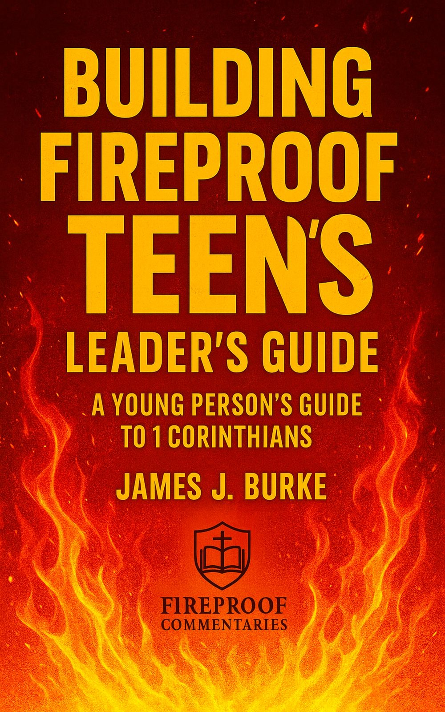
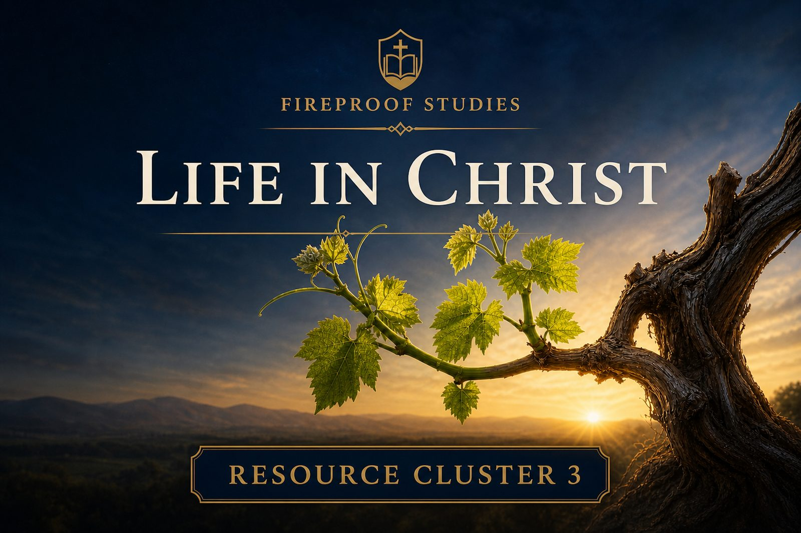

Where to Stand for Teens
A teen adaptation focused on truth, foundation, and standing faithfully in a shifting world.
Expected publication: May.
Request Test Reader AccessChrist-centered biblical teaching for readers, teachers, and churches.
Fireproof curriculum is designed to help biblical truth move from careful study into teachable lessons, thoughtful discussion, and faithful application.

A Young Person’s Guide to 1 Corinthians
A 14-session study designed to help teens understand the church, spiritual gifts, unity, holiness, love, and maturity through 1 Corinthians.
This curriculum is built to be usable for youth group, Sunday School, family discipleship, or small church teaching settings. It is structured to help leaders teach clearly without requiring extensive preparation or expensive materials.

A Thirteen-Session Evangelistic Youth Curriculum
A Gospel-centered course for teenagers who may be unsaved, uncertain, newly converted, or unable to explain salvation clearly.
The Where To books are being adapted into teen-friendly resources that preserve the theological seriousness of the original works while making them accessible for younger readers and group study.
A teen adaptation focused on truth, foundation, and standing faithfully in a shifting world.
Expected publication: May.
Request Test Reader AccessA forthcoming study on direction, obedience, and walking faithfully with Christ in daily life.
Tentative goal: August.
A forthcoming study on rest, peace, striving, and the finished work of Christ.
Tentative goal: December.
Where to Stand for Teens is currently in test-reader review. If you would like to preview the manuscript and provide honest feedback before publication, you may request access through the contact page.
The private test-reader page is not publicly linked and is shared only by direct request.
Request Test Reader AccessMany small churches need resources that are serious enough to teach truth well, but simple enough to use without a large staff, large budget, or specialized program.
Fireproof curriculum is being developed with those churches in mind. The goal is to provide material that can be used by pastors, volunteer teachers, parents, and lay leaders who want to teach Scripture faithfully.
Additional workbooks, leader guides, worksheets, and resource packs are planned as the Fireproof curriculum library grows. These resources will be developed to support churches and families with clear, usable teaching tools rooted in biblical exposition.
The curriculum line is still growing, but the direction is intentional: serious biblical content made useful for real teaching settings.
If you are considering a Fireproof curriculum resource for your church, youth group, Sunday School class, or family, you may use the contact page to ask about current and upcoming materials.
Contact